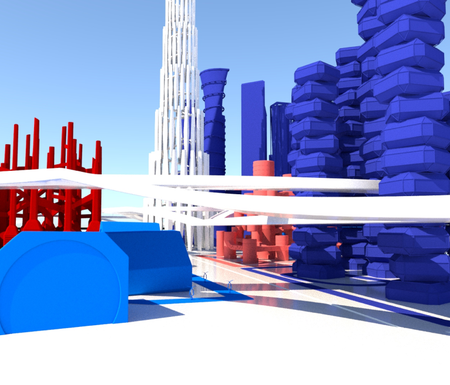

План города
Изначально город проектировался с целью получать из него максимальную пользу. Поэтому было принято решение разбить город на районы, каждый из которых имеет свои функции.

Разделение на районы
Поэтому было принято решение разбить город на районы, каждый из которых имеет свои функции.Так в городе появились: университет, индустриальная район, коммерческий район и жилой район.
Система дорог
Система дорог в городе разделена на четыре зоны и два уровня. Второй уровень находиться над первым, таким образом первый уровень является фундаментом города.